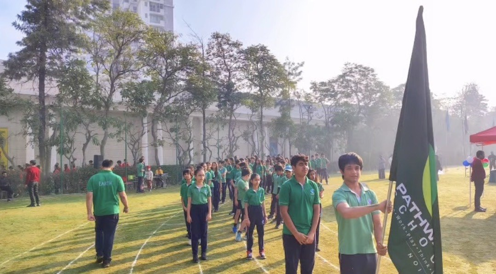

I was born and raised in the Delhi NCR region of India, where I grew up surrounded by the rhythm of family enterprise. Paint being manufactured, doors and laminates being crafted, and buildings taking shape from the ground up. These threads of business, building, and ambition have shaped the way I see the world and the path I want to carve in it.
I’m currently a Grade 12 IB Diploma Programme student at Pathways School Noida, pursuing Higher Level coursework in Business Management, Economics, and Design Technology, with my sights set on the intersection of artificial intelligence and entrepreneurship.
Alongside my studies, I’ve turned that interest into practice. I lead digital strategy and AI automation for Veneer Casa, our family’s veneer and laminate business, completed internships at Kviraaj and Autologix, and founded BuildSmart, a platform that helps aspiring entrepreneurs generate viable business plans. My curiosity about how AI is changing industry also drives my research paper exploring whether AI is obsoleting business consulting or reinventing it.
Off the desk, basketball has been a constant. I’ve competed in tournaments across India and internationally, from the United World Games in Austria to an elite sports camp in Malaysia, and I’ve served as Earth House Captain at my school. I’m continually seeking opportunities to build things that matter, blending technology with the entrepreneurial instinct I grew up around.

Mission
To build a strong foundation now by learning relentlessly, excelling in my Grade 12 IB examinations, and turning knowledge into real results. I want to use technology and entrepreneurial thinking to strengthen the businesses and communities I come from, bringing the tools of AI and modern strategy into traditional industries like manufacturing and real estate to make them sharper, more efficient, and better prepared for what’s next. Right now that means committing fully to my education, building real things like BuildSmart and digital systems for my family’s ventures, and proving that good ideas backed by execution can move an entire business forward.
Vision
To earn a place not simply at the best-ranked university, but at the one best suited to who I am and what I want to build, where my interest in AI and entrepreneurship can grow into something real. I see myself founding and leading ventures that sit at the meeting point of technology and business, turning family enterprise into an ecosystem that competes on innovation rather than tradition alone. Beyond my own companies, I want to open that same path for others, showing that you can honor where you come from while building something the previous generation never imagined.
The future is already here. It’s just not evenly distributed.
William Gibson
The best way to predict the future is to invent it.
Alan Kay
The impediment to action advances action. What stands in the way becomes the way.
Marcus Aurelius, Meditations
You can’t connect the dots looking forward; you can only connect them looking backwards.
Steve Jobs
Five pieces on AI, entrepreneurship, and judgment.
Is AI obsoleting business consulting, or reinventing it?
BuildSmart, Veneer Casa, and an AI scheduling tool.
Real estate, logistics, and a family manufacturing business.
Student council, Earth House, and basketball for India.
Wharton, BCG, PwC, KPMG, and what I took from them.